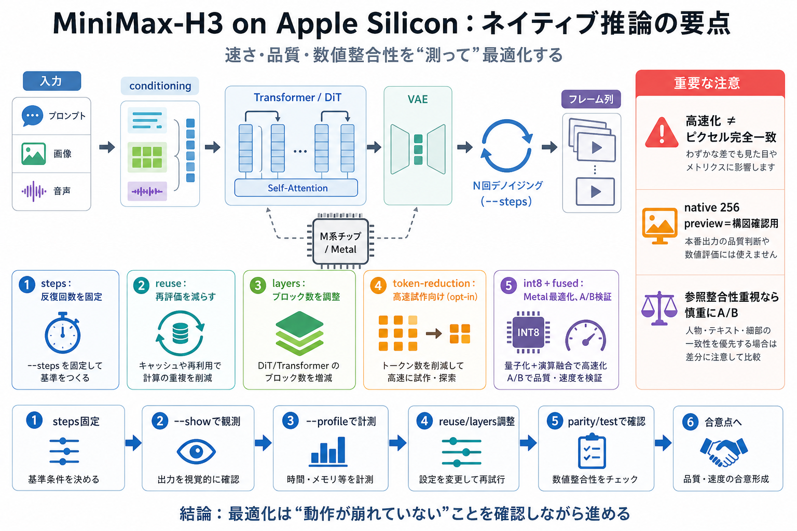

MiniMaxAI/MiniMax-H3
MiniMax H3 is a general-purpose, omni-modal generative system. It supports unified understanding of multimodal contexts …

Apple Silicon（主にM系チップ）で「画像→動画/音声/マルチモーダル」推論を高速化する、ネイティブ実装（h3-metal）の要点を、steps・reuse・layers・量子化/融合まで繋げて整理します。
速度最適化（reuse/layers/token-reduction/int8・融合）は、MLX等の別実装とピクセル完全一致を保証しません。代わりに「設定・被写体・動き」を整合させ、検証しながら最適点を探す設計になっています。
READMEは「ホスト/メタデータ検証 → Metalブロック互換 → プロンプトエンコード → 参照（first/last・Ref2VA）」の順に、動く部品を段階的に完成させます。
H3は内部でTransformer（DiT等）・VAE、さらにテキスト/画像/音声のconditioningを扱い、一定ステップ数のデノイジングを繰り返してフレーム列を生成します。
重要パラメータの見取り図は後半（steps / reuse / layers）で具体化します。
速度/品質/検証可能性を分ける主軸は、steps・reuse・layers・token-reduction・int8量子化/演算融合です。
--steps N は、実際のデノイジングパスがちょうどN回になることを意味します。時間要求（--seconds）は24fps相当に丸められます。
reuseは再評価を減らし、layersはTransformerブロック数を減らすことで速度を上げます。評価手順として「まずsteps固定→次にlayers」などが組めます。
デフォルトOFFで、token-reductionはトークン圧縮によって構図がclose-referenceから逸れる可能性があります。速い試作向けで、参照整合性最優先なら慎重に判断します。
native 256 previewは、細部や複雑な構図では不利になり得るため最終品質の代替になりにくいです。主用途は“構図確認の高速プレビュー”です。
--show はデノイジング遷移ごとに代表フレームを表示し、完了後に最終フレームも出します。--profile は各フェーズの壁時計時間・ピークメモリ・dispatch回数などを可視化できます。
M5向けのint8量子化と演算融合は大幅な高速化になり得ます。一方で数値検証が揺れる可能性があるため、--use-slower-* 系で比較できるよう配慮されています。
このプロジェクトは「速さ・品質・数値整合性のトレードオフ」を体系化し、--show と--profile、さらにパリティテスト導線で検証可能にしています。
MiniMax H3 is a general-purpose, omni-modal generative system. It supports unified understanding of multimodal contexts …
> On the 128 GB M5 Max, clean end-to-end image+audio and embedded-video+audio renders completed in 74.58 and 76.99 secon…
MiniMax scheduled the H3 model release for August 3, 2026 at 00:00 China Standard Time. After the configuration, weight …
Source: MiniMax H3 model card, August 3, 2026. On the independent Artificial Analysis leaderboards, H3 has been placing…
## Overview MiniMax H3 is an open-weight, general-purpose multimodal generation model. Rather than being confined to on…